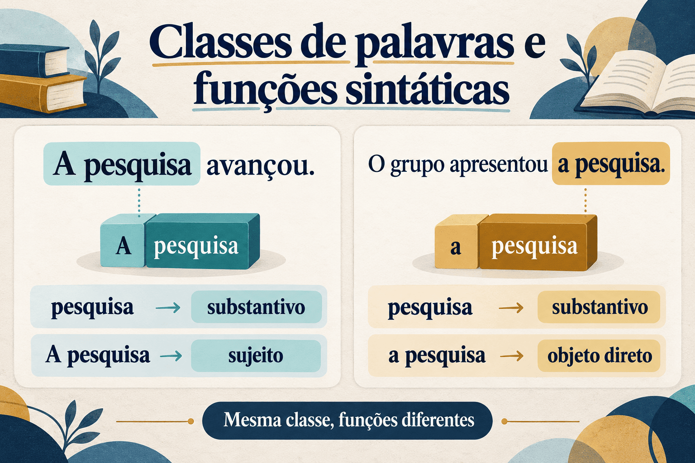

Classes de palavras e funções sintáticas: diferenças e relações
Em uma análise gramatical, dizer que uma palavra é substantivo não equivale a dizer que ela é sujeito. A primeira classificação se refere a uma classe de palavras; a segunda identifica uma função sintática. Embora relacionadas, essas informações respondem a perguntas diferentes sobre a organização da língua.
Compare “A pesquisa avançou” e “Os estudantes apresentaram a pesquisa”. Nas duas orações, “pesquisa” é um substantivo. Contudo, o grupo “a pesquisa” funciona como sujeito na primeira e como objeto direto na segunda. A classe da palavra permanece, enquanto a função do constituinte muda.
Compreender essa distinção é fundamental para estudantes de Letras e professores de Língua Portuguesa. Ela permite analisar enunciados com maior precisão, reconhecer limites de classificações baseadas apenas no significado e elaborar atividades que relacionem descrição gramatical, leitura e produção textual.
Neste artigo, utilizamos a nomenclatura tradicional como referência inicial, com ressalvas quando diferentes modelos oferecem outras descrições. O percurso retoma a noção de sintagmas e constituintes e apresenta exemplos próprios, comparações e questões comentadas.

O que são classes de palavras?
As classes de palavras são agrupamentos estabelecidos a partir de propriedades compartilhadas pelos itens linguísticos. A classificação considera aspectos de forma, distribuição e significado. Flexão, possibilidades de combinação e posições em que uma palavra pode ocorrer ajudam a identificar seu comportamento.
Por isso, classificar não consiste apenas em consultar uma definição e aplicá-la a uma palavra isolada. É necessário observar o uso: “jantar” apresenta comportamento verbal em “Os pesquisadores vão jantar”, mas nominal em “O jantar terminou cedo”. A mesma forma gráfica pode corresponder a empregos de classes diferentes.
Três critérios que se complementam
- Morfológico: investiga flexões e formas. Verbos, por exemplo, apresentam formas associadas a tempo, modo, pessoa e número.
- Sintático ou distribucional: examina combinações e ambientes de ocorrência. Um adjetivo pode modificar um nome e, em muitas construções, concordar com ele.
- Semântico: considera propriedades de significado, como referência, qualificação, quantificação e localização temporal.
O significado sozinho não resolve a classificação
“Corrida” pode designar uma ação e ser substantivo. “Permanecer” pode indicar continuidade de um estado e ser verbo. Assim, definir verbo exclusivamente como “palavra que indica ação” não permite reconhecer toda a classe nem distingui-la adequadamente de outras.
As dez classes na classificação tradicional
A tradição escolar brasileira costuma apresentar dez classes. O quadro abaixo é uma referência inicial: seus exemplos não substituem a análise contextual, e suas descrições não esgotam as propriedades de cada categoria.
| Classe | Propriedades a observar | Exemplo |
|---|---|---|
| Substantivo | Pode atuar como núcleo nominal, admitindo determinantes e modificadores. | A pesquisa avançou. |
| Adjetivo | Pode atribuir propriedades a referentes e apresentar concordância nominal. | Uma pesquisa rigorosa. |
| Artigo | Participa da determinação nominal e apresenta distinções de gênero e número. | Os estudantes chegaram. |
| Numeral | Expressa, em usos típicos, quantidade exata ou ordenação. | Dois estudantes chegaram. |
| Pronome | Relaciona-se à referência, às pessoas do discurso e à retomada de expressões. | Eles apresentaram o trabalho. |
| Verbo | Apresenta conjugação e participa da organização da predicação. | Os estudantes apresentaram o trabalho. |
| Advérbio | Em usos típicos, modifica verbos, adjetivos, outros advérbios ou o conteúdo da oração. | O grupo chegou cedo. |
| Preposição | Introduz termos e estabelece relações na estrutura dos sintagmas. | O grupo depende de recursos. |
| Conjunção | Participa da articulação de unidades coordenadas ou de certas relações de subordinação. | Ana e Paulo estudaram. |
| Interjeição | Pode formar um enunciado expressivo relativamente autônomo. | Ufa! Terminamos a revisão. |
Os limites entre algumas classes são discutidos na pesquisa linguística. Artigos, demonstrativos e possessivos podem receber tratamentos diferentes conforme a teoria; a relação entre substantivos e adjetivos também é objeto de debate. Uma descrição acadêmica precisa explicitar os critérios empregados, em vez de apresentar uma classificação como a única possível.
O que são funções sintáticas?
Funções sintáticas descrevem relações estruturais estabelecidas na oração ou no interior de um sintagma. Sujeito, objeto direto, objeto indireto, complemento nominal, adjunto adnominal, adjunto adverbial e predicativo são rótulos conhecidos da análise tradicional.
Essas funções não são propriedades fixas de palavras fora de uma construção. O substantivo “professora”, isolado, não é automaticamente sujeito: precisamos saber como aparece no enunciado. Em “A professora orientou o grupo”, o grupo nominal “a professora” é sujeito. Em “O grupo consultou a professora”, é objeto direto.
A unidade que exerce a função pode ser um grupo inteiro
“As pesquisadoras experientes apresentaram os resultados.”
O sujeito completo é “as pesquisadoras experientes”. O substantivo “pesquisadoras” é seu núcleo, mas a função de sujeito é atribuída ao constituinte inteiro. Dentro dele, artigo e adjetivo mantêm relações com o núcleo nominal.
Também é possível que uma oração exerça uma função. Em “Que todos participem é importante”, a oração “que todos participem” funciona como sujeito. Identificar uma função não informa, por si só, qual é a forma do constituinte que a realiza.
Classe, categoria sintagmática e função: três níveis de análise
Para evitar confusões, convém separar a classe de uma palavra, o tipo de sintagma e a função desempenhada pela unidade na construção.
| Nível | Pergunta | Exemplo: “Os estudantes leram o artigo” |
|---|---|---|
| Classe de palavras | A que categoria pertence a palavra neste emprego? | “Estudantes” é substantivo. |
| Categoria sintagmática | Que tipo de unidade forma o grupo? | “Os estudantes” é um sintagma nominal. |
| Função sintática | Que relação a unidade estabelece na oração? | “Os estudantes” funciona como sujeito. |
Nesta descrição introdutória, adotamos sintagma nominal (SN) para grupos organizados em torno de um nome. Em modelos que adotam a hipótese do sintagma determinante, a representação de grupos com artigo pode ser diferente. Essa diferença teórica não elimina a necessidade de distinguir categoria e função.
Uma mesma classe pode participar de funções diferentes
Substantivos como núcleos de sujeito e objeto
Na função de sujeito
“O artigo recebeu críticas.”
“Artigo” é substantivo e núcleo do SN “o artigo”, que funciona como sujeito.
Na função de objeto direto
“A comissão avaliou o artigo.”
“Artigo” continua sendo substantivo, mas o SN “o artigo” funciona como objeto direto.
A mudança de função não exige mudança de classe. Também não decorre apenas da posição: em “O artigo, a comissão avaliou ontem”, a leitura de tópico com objeto anteposto pode manter a relação de complementação com “avaliou”. A ordem linear precisa ser interpretada junto às demais propriedades da construção.
Adjetivos como adjuntos e predicativos
Adjunto adnominal
“As pesquisadoras cuidadosas revisaram o texto.”
O adjetivo “cuidadosas” integra o SN sujeito e modifica o nome “pesquisadoras”. Na análise tradicional, exerce função de adjunto adnominal.
Predicativo do sujeito
“As pesquisadoras estavam cuidadosas.”
O adjetivo “cuidadosas” atribui uma propriedade ao sujeito por meio da predicação. É analisado como predicativo do sujeito.
O adjetivo não precisa estar dentro de um grupo nominal para atribuir uma propriedade. A diferença entre os exemplos é estrutural: no primeiro, ele modifica o nome dentro do SN; no segundo, participa do predicado e se relaciona ao sujeito.
Uma mesma função pode ser realizada por formas diferentes
A função de adjunto adverbial de tempo pode ser realizada por um advérbio ou por um grupo preposicionado. Na análise tradicional, também se reconhecem orações subordinadas adverbiais temporais.
- “O grupo apresentou o trabalho ontem.” — advérbio de tempo.
- “O grupo apresentou o trabalho durante a manhã.” — sintagma preposicional com valor temporal.
- “O grupo apresentou o trabalho quando a sessão começou.” — oração subordinada adverbial temporal.
O valor temporal e a relação circunstancial aproximam os exemplos, mas suas formas são distintas. Em “durante a manhã”, não é adequado classificar a palavra “manhã” como advérbio: ela é um substantivo no interior do grupo preposicional. A função do conjunto não altera automaticamente a classe de cada palavra.
Locução e classe de cada palavra
A expressão “durante a manhã” pode ser descrita, na terminologia escolar, como locução adverbial de tempo. Essa classificação do conjunto é compatível com reconhecer “durante” como preposição, “a” como artigo e “manhã” como substantivo. As descrições operam em níveis diferentes.
Análise morfológica e análise sintática de uma oração
Enunciado em análise
“As pesquisadoras experientes revisaram os relatórios ontem.”
1. Classificação das palavras no contexto
| Palavra | Classe | Observação |
|---|---|---|
| As | Artigo definido | Determina o nome “pesquisadoras”. |
| pesquisadoras | Substantivo | Núcleo do grupo nominal sujeito. |
| experientes | Adjetivo | Modifica “pesquisadoras” e concorda com esse nome. |
| revisaram | Verbo | Forma do pretérito perfeito do indicativo, na terceira pessoa do plural. |
| os | Artigo definido | Determina o nome “relatórios”. |
| relatórios | Substantivo | Núcleo do grupo nominal objeto. |
| ontem | Advérbio | Localiza temporalmente o evento. |
2. Delimitação das unidades e identificação das funções
- Sujeito: “as pesquisadoras experientes”.
- Núcleo do sujeito: “pesquisadoras”.
- Adjuntos adnominais do núcleo do sujeito: “as” e “experientes”, na nomenclatura tradicional.
- Predicado verbal: “revisaram os relatórios ontem”.
- Verbo transitivo direto nessa construção: “revisaram”.
- Objeto direto: “os relatórios”, com núcleo em “relatórios”.
- Adjunto adnominal do núcleo do objeto: “os”, na nomenclatura tradicional.
- Adjunto adverbial de tempo: “ontem”.
A análise morfológica distribui as palavras por classes. A análise sintática identifica relações entre unidades, inclusive entre elementos internos aos sintagmas. São descrições complementares: a primeira não substitui a segunda.
Função sintática não é papel semântico
Outra distinção necessária envolve as funções sintáticas e os papéis semânticos dos participantes. Sujeito é uma função sintática; agente designa, em usos típicos, quem realiza ou desencadeia uma ação. A correspondência entre eles não é obrigatória.
O sujeito não é sempre quem pratica a ação
“A comissão avaliou o artigo.” — o sujeito “a comissão” corresponde ao agente da avaliação.
“O artigo foi avaliado pela comissão.” — o sujeito “o artigo” corresponde ao participante avaliado, enquanto “pela comissão” identifica o agente da passiva.
A mudança de voz reorganiza as funções sintáticas. Definir sujeito apenas como “quem faz a ação” impediria analisar adequadamente o segundo exemplo.
O mesmo cuidado vale para frases sem ação, como “A estudante gosta de literatura”. A identificação do sujeito requer critérios estruturais, não apenas uma pergunta sobre quem age.
Mudança de função e mudança de classe são fenômenos diferentes
Em “A pesquisa avançou” e “Apresentamos a pesquisa”, a função do SN muda sem alteração da classe de “pesquisa”. Já em “Vamos jantar” e “O jantar terminou”, há empregos verbal e nominal de uma mesma forma.
Também merecem atenção expressões como “os jovens”. Na tradição escolar, esse uso pode ser descrito como substantivação de um adjetivo; outras análises investigam elipse nominal ou diferentes propriedades categoriais. Não basta afirmar que uma palavra “virou substantivo porque é sujeito”: pronomes e orações também podem ocupar essa função.
Perini, Liberato, Saraiva e Fulgêncio (1998) discutem os critérios da classificação das palavras e a distinção entre classes e funções. Os autores também propõem uma revisão da separação tradicional entre substantivos e adjetivos. A proposta evidencia que as fronteiras categoriais dependem do modelo descritivo; neste artigo, mantemos a nomenclatura tradicional para apresentar as diferenças entre os níveis de análise.
Como fazer uma análise sem confundir os níveis
- Leia o enunciado completo. Observe o emprego da palavra e a interpretação da construção.
- Localize o predicador. Investigue quais participantes e complementos se relacionam com ele.
- Delimite os constituintes. Identifique os grupos que funcionam como unidades.
- Classifique as palavras no contexto. Combine critérios de forma, distribuição e significado.
- Descreva as funções dos grupos. Diferencie sujeito, complementos e modificadores.
- Examine a organização interna. Separe a função do constituinte completo das relações entre seus elementos.
- Justifique a hipótese. Utilize concordância, seleção de complementos e testes de constituência quando pertinentes.
Essa ordem é um roteiro didático, não uma sequência obrigatória de descoberta. Na prática, a classificação de palavras e a análise da estrutura se apoiam mutuamente e podem exigir revisão.
Aplicações ao ensino e à escrita acadêmica
Uma atividade de comparação pode produzir mais reflexão que uma lista de palavras isoladas. O professor pode apresentar “Os estudantes atentos participaram” e “Os estudantes permaneceram atentos”, solicitando que a turma explique o vínculo do adjetivo em cada construção.
Na revisão de textos acadêmicos, distinguir núcleo e grupo completo ajuda a compreender a concordância. Em “A análise dos resultados revelou diferenças”, o sujeito inteiro contém um nome plural, mas seu núcleo é “análise”. A relação estrutural explica o singular de “revelou”.
O objetivo é usar a nomenclatura para formular explicações. Saber que uma palavra é adjetivo ganha relevância quando esse conhecimento permite investigar o que ela modifica, a quem atribui uma propriedade e como sua posição participa da interpretação.
Questões para estudo e reflexão
Questão 1
Compare “A professora chegou” e “O estudante consultou a professora”. Identifique a classe de “professora” e a função do grupo “a professora” em cada oração.
Ver resposta comentada
“Professora” é substantivo nos dois enunciados. O SN “a professora” funciona como sujeito no primeiro e como objeto direto no segundo. A mudança de função não implica mudança de classe.
Questão 2
Em “As pesquisadoras dedicadas concluíram o projeto”, por que não é suficiente afirmar que o sujeito é “pesquisadoras”?
Ver resposta comentada
Porque “pesquisadoras” é o núcleo, enquanto o sujeito completo é “as pesquisadoras dedicadas”. O artigo e o adjetivo integram o mesmo SN. Confundir núcleo e constituinte completo elimina parte da estrutura analisada.
Questão 3
Explique a diferença entre “Uma análise cuidadosa evita equívocos” e “A análise foi cuidadosa”, considerando a palavra “cuidadosa”.
Ver resposta comentada
Nos dois casos, “cuidadosa” é adjetivo. No primeiro, modifica “análise” dentro do SN sujeito e exerce função de adjunto adnominal. No segundo, participa do predicado e atribui uma propriedade ao sujeito, funcionando como predicativo do sujeito.
Questão 4
Em “O grupo apresentou o trabalho durante a manhã”, a palavra “manhã” é advérbio porque participa de uma expressão temporal? Justifique.
Ver resposta comentada
Não. “Manhã” é substantivo. O grupo “durante a manhã” é um sintagma preposicional que funciona como adjunto adverbial de tempo; na terminologia escolar, pode ser descrito como locução adverbial temporal. A função do conjunto não transforma cada palavra em advérbio.
Questão 5
Na oração “O relatório foi revisado pela coordenadora”, qual é o sujeito e qual expressão identifica o agente? Que definição simplificada esse exemplo problematiza?
Ver resposta comentada
O sujeito é “o relatório”. A expressão “pela coordenadora” identifica o agente da passiva. O exemplo problematiza a definição de sujeito como “quem pratica a ação”, pois o sujeito corresponde ao participante que recebe a revisão.
Questão 6
Compare “Os estudantes vão jantar” e “O jantar reuniu os estudantes”. O que diferencia esse par dos exemplos em que um substantivo aparece como sujeito e como objeto?
Ver resposta comentada
No primeiro enunciado, “jantar” tem emprego verbal; no segundo, tem emprego nominal. Há diferença de classe no uso da forma. Já um substantivo pode permanecer substantivo quando o grupo de que é núcleo muda da função de sujeito para a de objeto.
Resumo de classes de palavras e funções sintáticas
- Classes de palavras agrupam itens por propriedades morfológicas, sintáticas e semânticas.
- Funções sintáticas descrevem relações estabelecidas em uma construção.
- Classe da palavra, categoria do sintagma e função do constituinte são níveis distintos.
- Uma mesma classe pode participar de funções diferentes, e uma função pode ser realizada por formas diferentes.
- A função do grupo completo não determina automaticamente a classe de cada palavra interna.
- Sujeito e agente não são equivalentes.
- Mudança de função não implica, por si só, mudança de classe.
- Uma análise consistente explicita seus critérios e o modelo descritivo adotado.
Perguntas frequentes sobre classes e funções
Qual é a diferença entre classe de palavras e função sintática?
Classe de palavras identifica uma categoria com base em propriedades do item em determinado uso. Função sintática descreve a relação que uma unidade estabelece com outras partes da construção, como sujeito ou objeto direto.
Todo substantivo é sujeito?
Não. Um substantivo pode ser núcleo de grupos com funções diferentes. Em “A pesquisa avançou”, “a pesquisa” é sujeito; em “Apresentamos a pesquisa”, é objeto direto.
Todo adjetivo é adjunto adnominal?
Não. Além de modificar um nome dentro do sintagma nominal, um adjetivo pode exercer função predicativa. Em “A estudante estava tranquila”, “tranquila” é predicativo do sujeito.
Qual é a diferença entre núcleo do sujeito e sujeito completo?
O sujeito completo inclui todos os elementos do constituinte que exerce essa função. O núcleo é o elemento central do grupo. Em “Os estudantes atentos participaram”, o sujeito é “os estudantes atentos”, e seu núcleo é “estudantes”.
Uma locução adverbial é formada apenas por advérbios?
Não. “Durante a manhã”, por exemplo, inclui preposição, artigo e substantivo. A classificação do conjunto como locução adverbial não transforma todas as palavras que o compõem em advérbios.
A mudança de função sintática altera a classe da palavra?
Não necessariamente. “Pesquisa” permanece substantivo quando o grupo “a pesquisa” passa da função de sujeito para a de objeto direto. Mudanças categoriais precisam ser demonstradas por propriedades do emprego, não apenas pelo rótulo da função.
Por que a palavra precisa ser analisada no contexto?
Porque uma mesma forma pode ter comportamentos diferentes conforme a construção. “Jantar” tem emprego verbal em “Vamos jantar” e nominal em “O jantar terminou”. O contexto permite identificar suas combinações e propriedades.
Considerações finais
Distinguir classes de palavras e funções sintáticas permite descrever o enunciado sem confundir a natureza das unidades com as relações que elas estabelecem. O substantivo não é sujeito por definição, o adjetivo não se limita à função de adjunto adnominal e um valor circunstancial não transforma toda expressão em uma palavra da classe dos advérbios.
Na formação acadêmica e no ensino, essa distinção favorece uma análise que compara construções, reconhece diferentes níveis estruturais e justifica suas conclusões. A nomenclatura passa a servir à investigação do funcionamento da língua e à compreensão dos textos.
Conteúdos relacionados
Referências e leituras para aprofundamento
- KENEDY, Eduardo; OTHERO, Gabriel de Ávila. Para conhecer sintaxe. São Paulo: Contexto, 2018. Disponível em: página da editora.
- MIOTO, Carlos; FIGUEIREDO SILVA, Maria Cristina; LOPES, Ruth. Novo manual de sintaxe. São Paulo: Contexto, 2013. Disponível em: página da editora.
- PERINI, Mário A.; LIBERATO, Yara G.; SARAIVA, Maria Elizabeth F.; FULGÊNCIO, Lúcia. Sobre a classificação das palavras. DELTA: Documentação de Estudos em Linguística Teórica e Aplicada, v. 14, número especial, 1998. DOI: 10.1590/S0102-44501998000300014.
Explore Outros Conteúdos
Continue seus estudos acessando outras seções do site Mestre Kira: